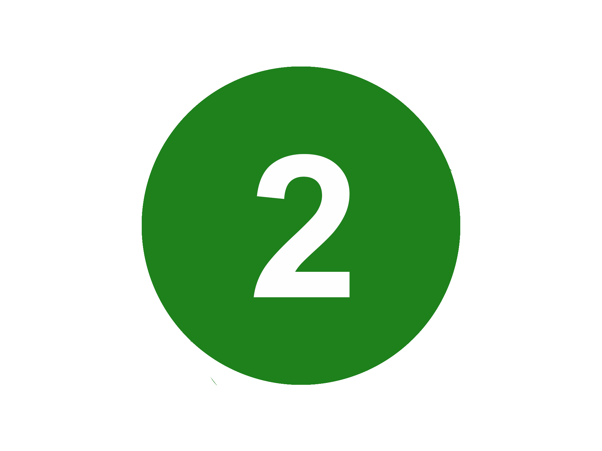
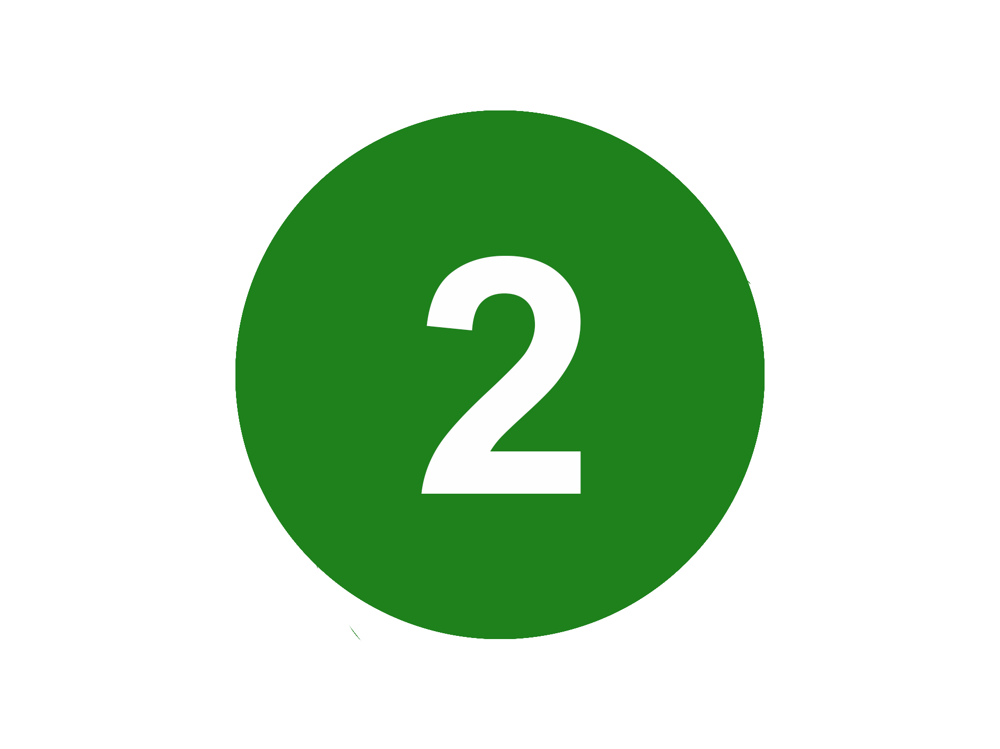

GREEN THE F*CK UP!
Problem
Bylivets påvirkninger
Byer som har oppstått frem til i dag har ikke tatt mye hensyn til en veldig viktig og vesentlig del av det å være et levende og pustende menneske. Mennesker har opphav fra naturen og har levd av naturlige ressurser siden dag en. Plassering av millioner av mennesker i en asfaltjungel med lite grøntareal er et unaturlig habitat. Det kan føre til problemer som ikke bare er ødeleggende for miljøet, men også vår fysiske og mentale helse. Studier fra flere kjente universitetsinstitusjoner har konkludert med at det er en tydelig sammenheng mellom selvrapportert generell lykkefølelse og fysisk helse, og tilgang til nok grøntområde. Ifølge FNs estimater, kan man si at rundt 3.3% av alle dødsfall på verdensbasis er relatert til helseproblemer som følge av mangel på grøntareal.
Bilde: Store mengder bileksos tåker til bilveiene.
© Arne Ristesund

Bilde: Luftforurensing la seg som et lokk over Oslo en kald vinterdag i 2016.
© Svein Nordrum / Samfoto / NTB scanpix
Klimapåvirkning
I tillegg til helseproblemer, har en mangel på grønne områder også en negativ effekt på miljøet. Planter og trær produserer oksygen og reduserer mengden karbondioksid fra luften. I tillegg filtrerer de ut annen forurensning og støvpartikler fra luften. I en by som Oslo er befolkningstettheten veldig høy i visse områder. Luftkvaliteten varierer betydelig avhengig av hvor mye grøntareal som finnes i disse områdene.
Oslo er Europas grønne hovedstad
Oslo ble valgt som europeisk klimahovedstad for for 2019. En av grunnene til at Oslo vant denne tittelen, var initiativet byen har tatt til å legge til rette for utslippsfri samferdsel. El-kjøretøy, sykling og opprettelse av bilfrie soner er noen av disse tiltakene. Selv om alle disse tiltakene er veldig gode og mange skritt i riktig retning, er det fortsatt mye som kan gjøre for å fortsette å bevege seg i en mer grønn retning for byen. I GreenUp tror vi på at Oslo trenger flere grønne lunger, spesielt i de høyest tettbefolkede områdene av byen. Dette vil skape et bedre miljø for byens innbyggere og dyreliv.
Bilde: Bileksos fra trafikkork fører til luftforurensing.
© Berit Roald / NTB scanpix
Bilde: Oslo er Europas klimahovedstad i 2019. På tross av dette er det veldig lite grønt i byen.
© Jarle Aabø
Grønne byer i et historisk perspektiv
Å lage rom for grønne lommer i byene er ikke et nytt konsept. I middelalderen var hager og parker med tilknytting til boliene et vanlig syn. Det finnes god dokumentasjon på at folk brukte å dyrke frukt og grønnsaker på små grønne områder. Dette ble for eksempel gjort langs en elv eller i hagene. Hensikten var i all hovedsak for estetiske og dyrkningsmessige årsaker. I dag er det lite vegetasjon i urbane områder, og det er et behov for å snu denne trenden.
Vårt mål


Matproduksjon
Lokalt dyrket mat gir viktige økonomiske muligheter, gir helsemessige fordeler og bidrar til å redusere miljøbelastningen. Det hjelper også til å bringe samfunnet sammen og gir folk muligheten til å gjøre en forskjell. I tillegg føler mange at lokal mat smaker bedre og varer lenger.
Som uttalt av Margaret Floyd: "Næringsverdien til lokale råvarer er større enn råvarer som er blitt sendt over lange avstander fordi lokale råvarer er friskere." Grønnsaker og frukt som sendes over lange avstander kan har blitt dyrket uten sprøytemidler, kjemisk gjødsel, genetisk modifisering eller bestråling, men de plukkes vanligvis før de er modne, noe som påvirker både ernæringsinnhold og smak.

Grøntområder og vær
Store grustak, som det ofte finnes i byer, tar opp mye varme i varmere dager. Fordi de er i direkte sollys, blir temperaturene på disse takene veldig høye. Denne varmen stråler tilbake til miljøet, og gjør byer opptil 3 til 5 celsius grader varmere enn forstadsområder, på varme dager. Flere grønne hustak vil redusere byens temperatur på slike dager.
Takhager kan også føre til mindre og mer effektiv bruk av energi. Ved å jobbe som et naturlig lag med isolasjon, vil grønne tak bidra til å holde varmen inne i bygningen om vinteren og varmen ute om sommeren.
I tillegg skal grønne tak beholde og administrere overflatevann. Dette gjøres ved å fange vannet når det regner og deretter sakte slippe det gjennom fordamping og plantebruk
Vårt konsept
Ideen vår virker kanskje ikke som den mest innovative ved første øyekast. Likevel mener vi at måten vår å transformere takterrasser og vegger om til grønne lunger er noe verden ikke har sett før. Dette er spesielt på grunn av to detaljer. For det første, er er vi fokusert på å bruke disse overflatene til organisk of lokal matproduksjon. For det andre er produktene våre unike på grunn av sitt innovative design.

Bilde: Vår Green Mat - Lett og transportere og enkel å installere på taket.
© Rukeri
Mange tror at å lage en takhage ikke er så vanskelig eller komplisert. Det mange ikke vet er at man ikke bare kan dumpe normal jord på take. Da står man i fare for jordkomprimering, døde vekster, lekasjer og til og med kanskje at taket kollapser. Derfor må man være spesielt forsiktig med hvilken jord man bruker på taket. Derfor har vi utviklet den grønne matten. Dette er en jordmatte som er laget for å etterligne ekte jord samtidig som den passer til et miljø veldig annerledes enn det på bakken. Det består av en nøye utvalgt miks av mineraler og organisk materiale. Dessuten inneholder den en miks av frø ut i fra ditt behov. Man trenger kun å rulle den ut på en flate, så vil regnvann gjøre resten av jobben for å få det til å gro. Bli med, og rull ut din egen hage bestående av urter, salater, spirer, eller andre alternativer. Matten kan bli tilpasset og installert på hvilken som helst utendørs flate, uansett om dette skulle være flate tak, skråtak, en vegg, veranda eller en annen ledig flate.

Bilde: Grønne takhager hjelper til med å forbedre miljøet og luftkvaliteten i byer.
© Monica Løvdahl
I tillegg til vår Green Mat har vi et utvalg av andre produkter som kan gjøre hagen enda bedre! Dette inkluderer blant annet frukttrær, bærbusker eller dypere bedd laget for produksjon av rotgrønnsaker.
Det er enkelt å bestille en av våre produkt! Se gjennom de forskjellige løsningene og produktene i nettbutikken vår, mål opp hvor mye du trenger, og trykk bestill.

Bilde: Med en takhage kan du til og med gro epletrær på taket!
© Grofondet
Vi jobber stadig med å opprette avtaler med skoler, offentlige bygg, firmabygg og borettslag. Ønsker du å bestille gjennom en av disse avtalene, kan du enkelt kontakte oss gjennom kontaktskjema i bunnen av nettsiden.
Vis produkterBilde: En modell av hva vårt ultimale mål for hvordan takene i Oslo skal se ut ved å bruke alle overflater som grønne områder.
© Arcasa Arkitekter
Hvordan bli grønn steg for steg

Sjekk om vi allerede har inngått en kontrakt med din bedrift, skole, boretslag eller lignende.
 

Se igjennom vårt utvalg og muligheter i vår nettbutikk, og velg det du liker.


Bestill dine produkt gjennom vår nettbutikk , og vi vil levere det til deg i løpet av noen få virkedager!